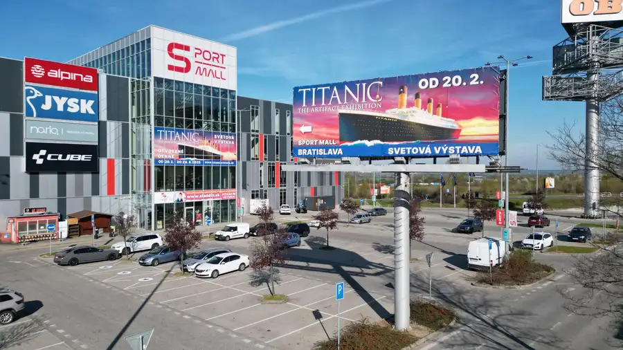

Obchodný priestor na prízemie v plne obsadenom centre
Lamač, Bratislava

- Plocha10000 m²
- StavKompletná rekonštrukcia
- VlastníctvoNevysporiadané
O nehnuteľnosti
Výnimočný obchodný priestor v plne obsadenom obchodnom centre SPORT MALL s masovou návštevnosťouPriestor má vstup z hlavnej pasáže na prízemí obchodného centra a má skvelú prístupnosť, je prvý a narazí na neho každý jeden návštevník centra. V centre je aktuálne prítomná populárna výstava TUTANCHAMON a v nasledujúcich rokoch tu budú ďalšie svetové výstavy. Mix nájomníkov je orientovaný na detský, zážitkový a rodinný segment. Obchodné centrum je v našom výhradnom vlastnícte a sme pripravení byť nápomocní pri podpore nového nájomníka.Hneď pri obchvate v obchodnej zóne Bory v centre s návštevnosťou viac ako 130 000 ľudí mesačne. Možnosť veľkoplošnej reklamy s viditeľnosťou 100 000 áut denne. Budujte svoj biznis na mieste, kde o vás bude vedieť každý. - S vlastným parkovaním pre 200 vozidiel a výbornou dostupnosťou- Obchodné centrum neustále modernizujeme a dynamicky rozvíjame- S-Port Mall ponúka kvalitu porovnateľnú s Ačkovými obchodnými centrami – ale cena za m2 priestoru je na úrovni štandardného bratislavského prenájmu- Sme jediným vlastníkom aj prevádzkovateľom centra, sme pripravení hľadať riešenia a prispôsobenia nájomných podmienok na mieru- Náš cieľ je, aby ste u nás našli podnikateľský domov s najvyššou atraktivitouBuďte na jedinečnom mieste, vo výnimočnom centre, v kvalite Áčkového obchodného centra konečne za cenu, ktorá pre Vás nebude likvidačná! Podnikajte s nami, podnikajte v SportMall!https://www.s-portmall.sk/V prípade záujmu kontaktujte nášho obchodného riaditeľa: Mail: lehovec@francorealestates.czTel: +421 911 713 713
Parametre
- Druh
- Obchodné priestory
- Dátum zverejnenia
- 08. 12. 2025
- Elektrina
- Na pozemku - 230 V, Na pozemku - 400 V
- Odpadové vody
- Na pozemku - Kanalizácia
- Stav nehnuteľnosti
- Kompletná rekonštrukcia
- Telekomunikácie
- Telefón, Internet, Satelit, Optická sieť
- Typ
- Prenájom
- Vlastníctvo
- Nevysporiadané
- Voda
- Na pozemku - Diaľkový vodovod
- Vybavenie
- Sklad, Výťah
- Vykurovanie
- Ústredné
- Úžitková plocha
- 10000 m²